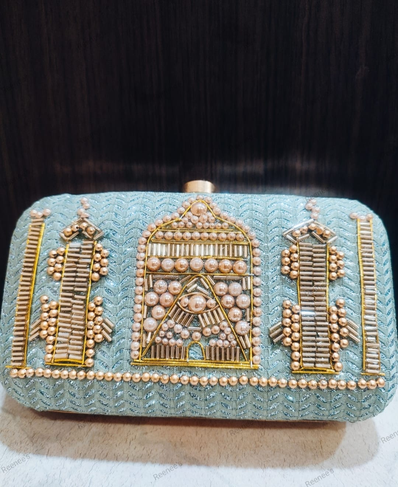
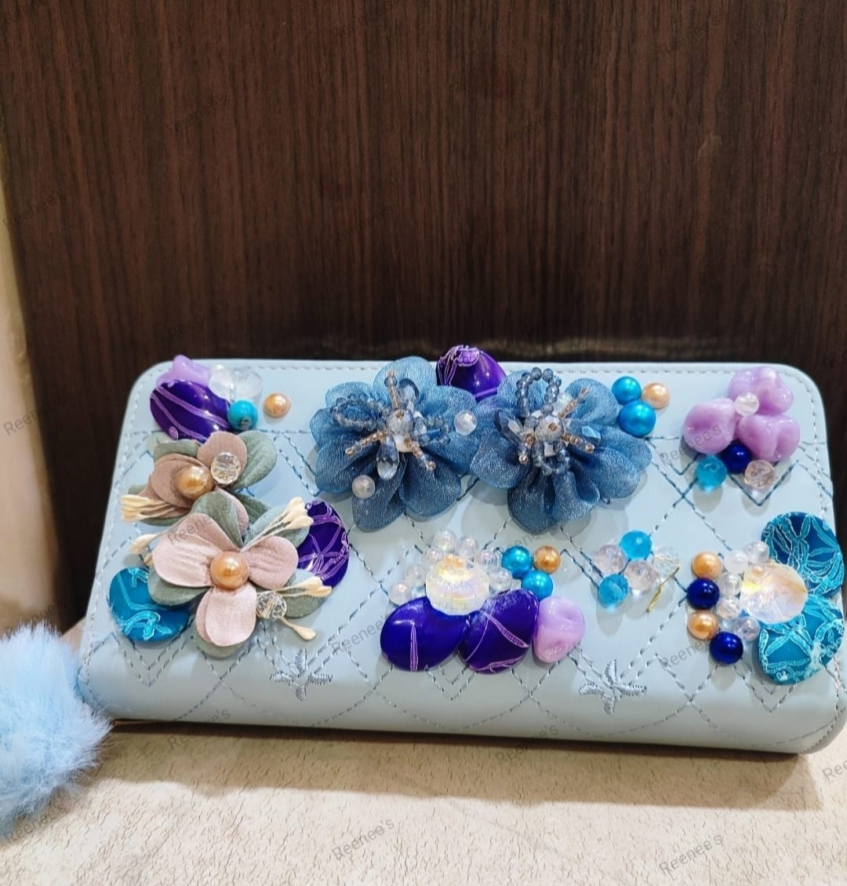

About Me:
Hello, I’m Rini from India, and I’m thrilled to welcome you to my
website. Raised in a middle-class, educated family, I have always
cherished our rich heritage and culture. My passion for Indian
handicrafts drives me to infuse traditional artistry with my own
creative touches. My journey is deeply inspired by my son, whose love
and patience fuel my dedication to this craft. His encouragement has
empowered me to pursue my passion for handicrafts at this stage in my
life. I invite you to explore and enjoy my collection of handcrafted
masterpieces, each created with meticulous care and a personal touch.

Hand Crafted Clutch
899 ₹
$10.79 USD
Elevate your style with our exquisite Hand Crafted Clutch, a perfect
blend of elegance and sophistication. Crafted from high-quality PU
leather, this clutch is a must-have accessory for any fashion-forward
individual.
Materials and Craftmanship:
- Outer Material: Premium PU Leather
-
Handcraft Materials:
- Satin fabric
- Resin flowers
- Pearl Beads
- Glossy Marble beads
Design and Features:
- Dimensions: 7 Inches in Length & 4 Inches in Width
-
Compartments: A Single, spacious compartment to hold your phone,
keys, cards and essentials
-
Accessories: Comes with a stylish metal sling, allowing you to
wear it as a shoulder bag or crossbody for added versatility
Pattern: The clutch showcases an intricate embellished pattern that
exudes charm and sophistication. The satin fabric is adorned with
delicate resin flowers and pearl beads, while glossy marble beads
add a touch of sparkle and glamour

Handcrafted Clutch
899 ₹
$10.79 USD
Add a touch of elegance to your ensemble with our exquisite
Handcrafted Clutch. Made from high-quality PU leather, this clutch is
the perfect accessory for any stylish individual looking for a unique
and artisanal touch.
Materials and Craftmanship:
- Outer Material: Premium PU Leather
-
Handcraft Materials:
- Organza & Cotton Fabric
- Crystal Beads
- Pearl Beads
- Glossy Marble beads
Design and Features:
- Dimensions: 7 Inches in Length & 4 Inches in Width
-
Compartments: A Single, spacious compartment to hold your phone,
keys, cards and essentials
Pattern: The clutch boasts an intricate embellished pattern, adding a
luxurious and sophisticated touch to any outfit

Handcrafted Clutch
899 ₹
$10.79 USD
Discover the epitome of elegance with our Handcrafted Clutch, a
meticulously designed accessory that combines premium materials with
exquisite craftsmanship. Perfect for any fashion-forward individual,
this clutch adds a sophisticated touch to any ensemble.
Materials and Craftmanship:
- Outer Material: High-quality PU Leather
-
Handcraft Materials:
- Stunning blend of satin and organza fabric
- Glossy marble beads
- Cosmetic pearl beads
- Delicate plastic flowers
Design and Features:
- Dimensions: 7 Inches in Length & 4 Inches in Width
-
Compartments: Includes one spacious compartment, ideal for
carrying your phone, keys, cards, and makeup essentials.
Pattern: Showcases an intricate embellished pattern that exudes luxury
and sophistication.

Handcrafted Clutch
1299 ₹
$15.59 USD
Step out in style with our Handcrafted Clutch, a stunning accessory
that showcases the perfect blend of traditional artistry and modern
elegance. Designed for the discerning fashion enthusiast, this clutch
adds a unique and sophisticated touch to any outfit.
Materials and Craftmanship:
-
Outer Material: A luxurious combination of canvas and leather for
durability and style.
-
Handcraft Materials:
- Glossy and Antique brass charms
- Matte golden charms
- Yellow Beads
- Maroon and white stones
Design and Features:
- Dimensions: 8 Inches in Length & 5 Inches in Width
-
Compartments: Features one spacious compartment, perfect for
carrying your phone, keys, cards, and makeup essentials.
Pattern: Showcases an intricate embroidered design, enhanced by the
beautiful combination of charms, beads, and stones, making it a
standout piece.

Handcrafted Bridal Clutch
1399 ₹
$16.79 USD
Enhance your bridal look with our elegant and stylish Handcrafted
Bridal Clutch. Designed with meticulous attention to detail, this mint
green clutch is the perfect accessory for your special day, offering
both beauty and functionality.
Materials and Craftmanship:
-
Outer Material: Luxurious silk, providing a soft, elegant sheen
that beautifully complements its mint green hue.
-
Inner Material: Features a secure clasp closure, ensuring your
essentials are kept safe throughout the event.
-
Handcraft Materials:
- Exquisite Golden and Rose Gold Cosmetic Pearl Beads
- Kardana Beads
Design and Features:
- Dimensions: 7 Inches in Length & 5 Inches in Width
-
Compartments: Contains one main compartment designed for easy
access and secure storage.
-
Sling Chain: Includes a removable metal sling chain, offering
versatile wearing options as a shoulder bag or a handheld clutch,
depending on your preference.
Pattern: Classic checked pattern that adds a touch of sophistication
and timeless elegance.

Handcrafted Clutch Bag
499 ₹
$5.99 USD
Introducing our Handcrafted Clutch Bag, a fusion of functional design
and artistic flair, perfect for those who appreciate unique, stylish
accessories. Crafted from water-resistant polyurethane leather, this
clutch is not only beautiful but also durable, making it an excellent
choice for daily use or special occasions.
Materials and Craftmanship
-
Outer Material: High-quality polyurethane leather that is
water-resistant, ensuring durability and long-lasting use.
-
Handcraft Materials:
- Vibrant mix of organza and cotton fabric
- Colored cosmetic pearl beads
- Crystal Beads
- Flat and Glossy Marble Beads
Design and Features
- Dimensions: 7 Inches in length & 5 Inches in Width
-
Compartments: Includes one spacious compartment, perfect for
holding your phone, keys, makeup, and other small items.
-
Sling Chain: Comes with a removable metal sling chain, allowing
you to carry it as a clutch or wear it over your shoulder for
added convenience.
Pattern: Features a classic checked pattern that adds a timeless
elegance to its appearance.

Handcrafted Clutch Bag
499 ₹
$5.99 USD
Elevate your accessory game with our Handcrafted Clutch Bag, the
epitome of elegance and craftsmanship. Designed for the fashion-savvy
and environmentally conscious, this clutch is made from high-quality,
water-resistant polyurethane leather, ensuring both durability and
style.
Materials and Craftmanship
-
Outer Material: Durable polyurethane leather, offering excellent
water resistance.
-
Handcraft Materials:
- White cosmetic pearl beads
- Mix of flat and glossy beads
Design and Features
- Dimensions: 8.66 Inches in length & 5.90 Inches in Width
-
Compartments: Includes two well-organized compartments, making it
easy to store and access your belongings efficiently.
Pattern: Features a stylish checked pattern, adding a classic touch
that complements any outfit.

Handcrafted Bridal Clutch
1399 ₹
$16.78 USD
Embrace the essence of bridal elegance with our Handcrafted Bridal
Clutch, tailored for the modern bride who desires a blend of style and
sophistication. This clutch is meticulously designed to complement
your wedding attire, ensuring you look flawless on your special day.
Materials and Craftmanship
-
Outer Material: Premium polyurethane leather that offers a sleek
and stylish black finish, perfect for coordinating with any bridal
gown.
-
Inner Material: Lined with pure fabric for a soft touch and
additional durability.
-
Handcraft Materials:
- Golden and Rose Gold Cosmetic Pearl Beads
- Golden Kardana Beads
- Elegantly Twisted Golden Wire
Design and Features
-
Dimensions: 8 Inches in Length & 5 Inches in Width & Inner Space
of 3 Inches
-
Compartments: Contains one main compartment designed to keep your
belongings organized and easily accessible.
-
Sling Strap: Includes a removable PU leather sling strap, offering
versatile carrying options as a shoulder bag or a chic clutch.
Pattern: Features a subtle checked pattern that adds a touch of
timeless elegance.